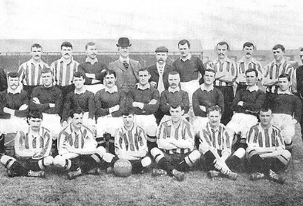
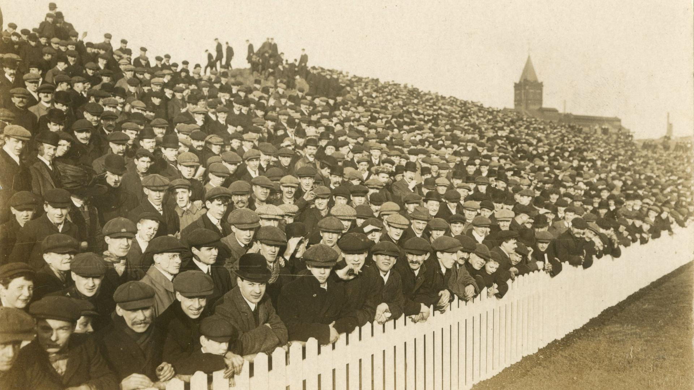
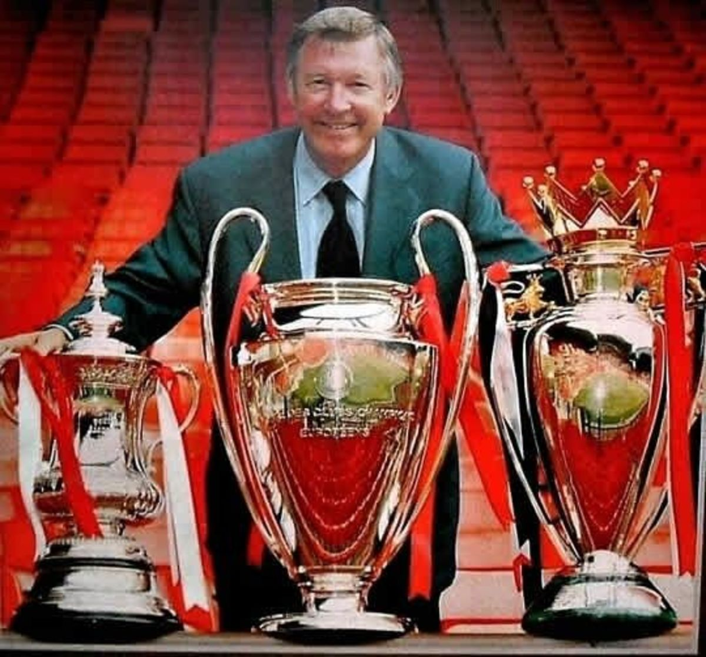

Founded in 1878 as Newton Heath LYR Football Club by the Carriage and Wagon department of the Lancashire and Yorkshire Railway.
By 1902, the club was nearly bankrupt. A local brewery owner named John Henry Davies saved the club and renamed it Manchester United.

Under manager Ernest Mangnall, the club won its first top-flight title in 1908 and moved into its current home, Old Trafford, in 1910.
Manchester United was the first English club to win the European Cup in 1968, led by the "Holy Trinity" of George Best, Denis Law, and Sir Bobby Charlton.

The club reached its peak under Sir Alex Ferguson, most notably in 1999 when they became the first English team to win the Treble: the Premier League, the FA Cup, and the UEFA Champions League.